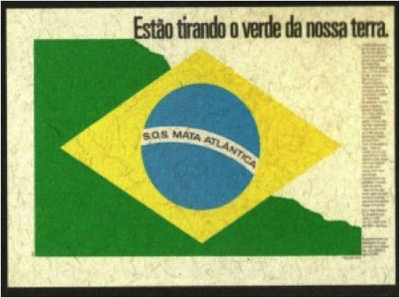
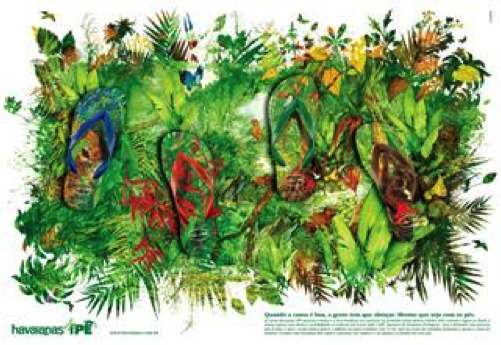

O Marketing no terceiro setor
02 de Outubro de 2017 às 07:00
Me formei “marqueteira” e no terceiro setor me deformei, me reformei, me transformei. Meu mentor no IDIS, Dr. Marcos Kisil diz que nós profissionais do setor social trazemos nossos conhecimentos de formação e incorporamos nossas habilidades nas funções que desempenhamos nas organizações para que trabalhamos. Assim comecei como marketing officer, depois gerente de Desenvolvimento Institucional com funções de Captação de Recursos e Comunicação, virei especialista em Marketing Relacionado a Causas e Investimento Social Corporativo e Familiar, alternando entre consultora, professora, gestora, voluntária e conselheira.
Mas durante esta trajetória toda, nunca deixei de ser marqueteira. E até com um orgulho subversivo de estar usando “técnicas de mercado” para ajudar causas sociais – hahaha! E ao longo dos anos senti a necessidade de organizar e revisitar conceitos de tudo o que é chamado de “Marketing Social”. Esse processo me ajudou identificar referências conceituais e casos, e assim fazer uma melhor aplicação destas técnicas no meu dia-a-dia. E aqui vou compartilhar meu entendimento e algumas referências dos “marketings do terceiro setor”.
Marketing Social, Marketing para Organizações sem fins Lucrativos e Marketing Relacionado a CausasMas durante esta trajetória toda, nunca deixei de ser marqueteira. E até com um orgulho subversivo de estar usando “técnicas de mercado” para ajudar causas sociais – hahaha! E ao longo dos anos senti a necessidade de organizar e revisitar conceitos de tudo o que é chamado de “Marketing Social”. Esse processo me ajudou identificar referências conceituais e casos, e assim fazer uma melhor aplicação destas técnicas no meu dia-a-dia. E aqui vou compartilhar meu entendimento e algumas referências dos “marketings do terceiro setor”.

Muita gente junta as palavras “Marketing” com “Social” e acha que está falando de marketing no terceiro setor, mas não é. O Marketing Social é um termo cunhado no início da década de 1970 definido como o “processo que aplica princípios e técnicas de marketing para criar, comunicar e proporcionar valor a fim de influenciar comportamento de públicos-alvo que beneficiam tanto a sociedade (saúde publica, segurança, meio ambiente e comunidade) como públicos-alvo propriamente ditos.” (Philip Kotler, Nancy Lee e Michael Rothschil, 2006)*.
Ou seja, são as técnicas de marketing para influenciar comportamentos, seja (1) aceitar uma novo comportamento (por exemplo beber e não dirigir), (2) rejeitar um comportamento potencialmente indesejável (por exemplo começar a fumar), (3) modificar comportamento atual (por exemplo melhorar as escolhas saudáveis na alimentação), (4) abandonar um velho hábito indesejável (por exemplo falar ao telefone celular e dirigir). Campanhas de marketing social são muito usadas por governos, na área da saúde, transportes – como a imagem ao lado na campanha “Foca no Trânsito” - , mas também por organizações da sociedade civil. Quem não lembra do “Xixi no Banho” da SOS Mata Atlântica, campanha bem-humorada para economizar água no período de crise? Assista o vídeo.
Ou seja, são as técnicas de marketing para influenciar comportamentos, seja (1) aceitar uma novo comportamento (por exemplo beber e não dirigir), (2) rejeitar um comportamento potencialmente indesejável (por exemplo começar a fumar), (3) modificar comportamento atual (por exemplo melhorar as escolhas saudáveis na alimentação), (4) abandonar um velho hábito indesejável (por exemplo falar ao telefone celular e dirigir). Campanhas de marketing social são muito usadas por governos, na área da saúde, transportes – como a imagem ao lado na campanha “Foca no Trânsito” - , mas também por organizações da sociedade civil. Quem não lembra do “Xixi no Banho” da SOS Mata Atlântica, campanha bem-humorada para economizar água no período de crise? Assista o vídeo.
O marketing social tem ferramentas próprias para o entendimento do público a ser atingido e dependendo do nível de profundidade da mudança desejada, adota-se estratégias diferentes que vão de informativas, passando por intervenções interpessoais até mudança de legislação - com punição de multa. Foi isso que foi feito para a adoção de cintos de segurança em carros, em 1994. A figura ao lado, retirada do livro Marketing Social (*informação abaixo) mostra os itens de um plano de marketing social.

Já o Marketing para Organizações sem fins lucrativos, na definição usada por Alan R. Andersen e Philip R. Kotler no livro “Strategic Marketing for Nonproft Organization” é “o processo de planejar e executar programas para engajar o comportamento do público-alvo por meio da criação e manutenção de trocas para satisfazer objetivos individuais e organizacionais”. Quando aplicado ao terceiro setor, estas trocas geram benefícios sociais.
A grande sacada aqui é de se usar as técnicas de marketing no processo de planejamento (esquema ao lado) principalmente na segmentação dos públicos de interesse da organização, no seu entendimento e como engajá-lo. Uma das premissas do marketing é o foco no “cliente” ou “público-alvo”, foi essa a revolução que o marketing trouxe nos conceitos administrativos. No nosso caso, ele pode ser um potencial doador pessoa física ou empresa, voluntário ou comunidade. E através do entendimento das suas necessidade e interesses é que se planeja a estratégia de como engajá-lo com a sua causa e organização, seja para doa, ser voluntário ou adotar um comportamento desejado como assinar uma petição ou participar de uma evento.

O Marketing Relacionado a Causas, já abordado aqui na Captamos, é uma parceria comercial entre uma empresa e organizações da sociedade civil que utilizam o poder de suas marcas em beneficio mútuo. Esta definição foi compilada pelo IDIS – Instituto para o Desenvolvimento do Investimento Social com base nos documentos do Business in The Community, da Sue Adkins, e nas experiências de organizações e empresas aqui no Brasil.
O diferencial para este tipo de parcerias entre empresas e OSCs é ir além dos orçamentos de patrocínios e investimento social e utilizar-se da estrutura de marketing da empresa, de seus produtos e serviços de uma forma mais criativa e duradoura. Um estudo feito no Reino Unido, demonstrou que os orçamento de marketing são cerca de 8 vezes dos destinado para investimento social!
Dois aspectos importantes para a credibilidade e sucesso de uma parceria de MRC são: o beneficio mútuo, ou seja, a empresa ganha com lucro, melhor reputação, e a OSC também, com recursos, novos apoiadores e prestigio, em equilíbrio. É muito ruim quanto o consumidor tem a percepção de que a empresa está levando vantagem na parceria. E o outro aspecto é a transparência com o consumidor, sobre os valor que estão sendo destinados e onde serão investidos os recursos.
No Brasil já temos casos de sucesso bem conhecidos como o das Havaianas com o Ipê – Instituto de Pesquisas Ecológicas, que já tem mais de 10 anos e R$5 milhões arrecadados; o da AVON com o combate ao câncer de mama que entre 2003 e 2015 arrecadou mais de R$61 milhões que foram doados a 131 projetos beneficiando mais 3,5 milhões de mulheres; e o Mc Dia Feliz, a maior campanha em prol da cura do câncer infantil e juvenil do país que só em 2016 arrecadou mais de R$23 milhões e destinou a 79 projetos em todo Brasil.
E o MRC não funciona somente para grandes organizações e empresas, pode ser feito pode uma organização comunitária com o comércio local: me lembro de uma organização pequena que fez uma parceria com um restaurante e que as sobremesas revertiam recursos para seus projetos. Olha que parceria mais deliciosa! Os volumes arrecadados foram baixos, comparados com os acima mencionados, na casa dos milhares de reais, mas o suficiente para a organização viabilizar seu projeto.
Porque usar as ferramentas de Marketing?
As organizações do terceiro setor enfrentam hoje diversos desafios: escassez de recursos, baixa credibilidade, a profissionalização de suas organizações para maior eficiência e eficácia, e a constante necessidade de se adaptar frente às mudanças e avanços das questões socioambientais e o contexto brasileiro.
É imprescindível, independentemente do tamanho da organização ou projeto social, que se busque o aperfeiçoamento e fortalecimento institucional, apoiando-se em técnicas de gestão. O marketing é uma ferramenta de gestão que pode ajudar a sua organização, e principalmente as pequenas, a se fazerem conhecidas, propagar suas ideias, fortalecer sua busca por recursos financeiros, humanos e técnicos e a se profissionalizar para atingir seus objetivos.
É imprescindível, independentemente do tamanho da organização ou projeto social, que se busque o aperfeiçoamento e fortalecimento institucional, apoiando-se em técnicas de gestão. O marketing é uma ferramenta de gestão que pode ajudar a sua organização, e principalmente as pequenas, a se fazerem conhecidas, propagar suas ideias, fortalecer sua busca por recursos financeiros, humanos e técnicos e a se profissionalizar para atingir seus objetivos.
Referências:
- * Marketing social: influenciando comportamentos para o bem, Philip Kotler, Nancy R. Lee, 3a edição, Bookman, 2011.
- Strategic Marketing for Nonproft Organization. Alan R. Andersen e Philip R. Kotler, Pearson Prentice Hall, 2014 7a edição.
- Marketing Social – novos paradigmas. Miguel Fontes, Elsevier Editora, 2008
- Guia Prático de Marketing Relacionado a Causas: Diretrizes e Casos, IDIS, 2007
- Marketing para o terceiro setor: guia prático para implantação do marketing em organizações filantrópicas. S. Manzione, São Paulo: Novatec Editora, 2006.
- Parceria Ipê e Havaianas – consulta em 1 de setembro de 2017
- Sobre o McDia Feliz – consulta em 1 de setembro de 2017
- Agência americana de Marketing Social – consulta em 1 de setembro de 2017. O site tem casos de clientes. Em inglês.
Marcia Kalvon Woods é comunicadora social formada pela ESPM, com mais de 15 anos de experiência no 3o setor, como gestora e especialista em investimento social. É vice-presidente da SAAP - Associação dos Amigos de Alto dos Pinheiros, membro dos Conselhos Curadores da Fundação Stickel e Amor Horizontal. É sócia e Conselheira da ABCR e do Instituto Doar.
Publicado por

Notícias mais populares
Gestão
Em agosto de 2017, a revista ÉPOCA e o Instituto Doar divulgaram a primeira ediç&...
Contexto e tendências
Criado para tornar mais transparentes as parcerias entre a administração públic...
Profissional captador
A captação de recursos é fundamental para a sustentabilidade de uma organiza&cc...